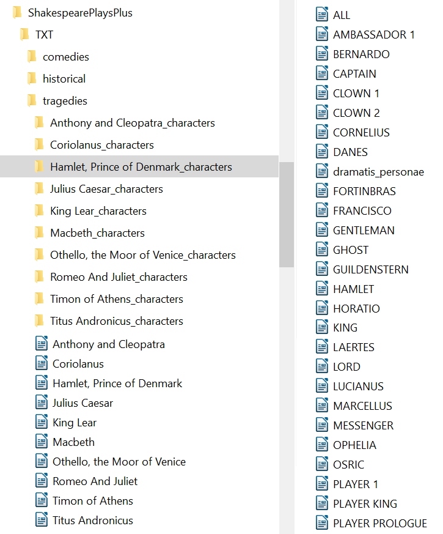
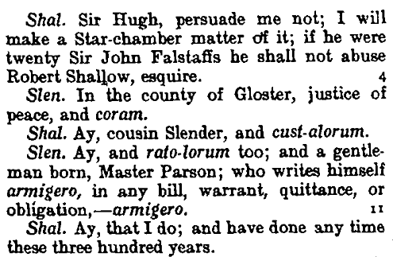
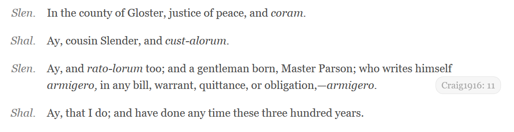
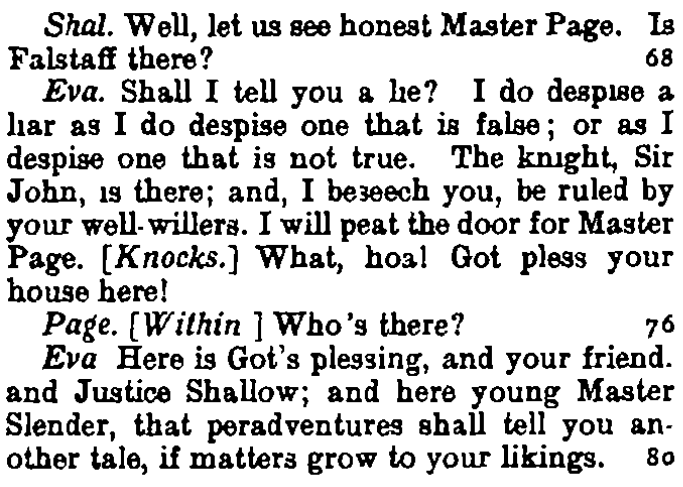

Review of “ShakespearePlaysPlus Text Corpus”
Table of Contents
Abstract
ShakespearePlaysPlus is a freely available digital text corpus of William Shakespeare’s plays. The 37 plays were compiled from the Oxford University Press 1916 Edition of “The Complete Works of William Shakespeare” and annotated by Mike Scott for his own research in 2006. The plays are organized in three categories according to their type, i.e., comedies, historical plays and tragedies. The speeches of all characters have been extracted into separate text files. The text files are marked up in a pseudo-XML style and stored in Unicode. The corpus is downloadable as an extractable zip-file. This review presents a detailed look at the text corpus, its creation and composition. ShakespearePlaysPlus is compact and marked up with essential information, making it a durable, portable and easily reusable resource.
Introduction
ShakespearePlaysPlus is a freely available digital text corpus of William Shakespeare’s plays. The original source is the Oxford University Press 1916 Edition of “The Complete Works of William Shakespeare (The Oxford Shakespeare / OUP)”.1 The corpus was compiled, processed and annotated by Dr. Mike Scott2 for his own research in 2006. The source texts were collected from the Online Library of Liberty (OLL) in digitized form, are in the public domain and “may be used freely for educational and academic purposes”. The corpus is available for download and re-use as a zip-file on the WordSmith Tools website3 under “Extra downloads for WordSmith Tools”. Information concerning the origin of the text corpus, its design, contents and format is presented on the ShakespearePlaysPlus download page.
Aims, content and design of the corpus
This corpus provides a complete digital text collection of all of Shakespeare’s plays in standardized modern spelling, in a durable format that can easily be reused for further research. It can be used for analysis and research within the WordSmith environment or with any other lexical analysis tool. This primary source collection can be understood as a ‘general purpose corpus’, open to many possibilities for reuse and adaptation depending on the focus and interest of the user, ranging from literary to linguistic and quantitative as well as qualitative research.
The description of the content presented on the Wordsmith website is straightforward: “You get 37 plays, plus all the speeches of all the characters. That is, you get the whole play Hamlet, plus separately all the speeches of Prince Hamlet, all the speeches of Horatio, etc. There is also a list of the plays and their dates.” The overview of all the plays and years of publication is presented as a link to a new page.4 The years of publication do not coincide with the dates presented on the OLL website, matching better with other Shakespeare sources.5
Basic relevant documentary information regarding format and design is presented in a pop-up link on the same page. The text files are stored in 16-bit Unicode format.6 The zip-file is 5.4 MB large and unzips to 24.3 MB on the computer. It contains 41 file folders and 1387 files altogether.
The composition of this collection is guided by the principle of completeness, i.e., the complete plays of Shakespeare.7 The 37 plays provided in the 1916 Oxford edition are organized according to three main categories, namely comedies, historical and tragedies. The plays and the respective “character speeches” sub-folders are available at the root level of each category folder.

The contents of the corpus provide what they promise, as described on the website. The structure of the data storage is clear and easy to understand. The simple structure makes it easy to integrate and reuse the text files in other systems.
Data modeling
The text files include embedded annotations in the form of “pseudo-XML angle-bracketed tags”.8 The annotations reflect the structure and contents of the play. Further analytic information not included in the HTML source texts in this form has been added, namely percentages indicating the relative position of the text segment9 within the entirety of the play.10 The percentages are based on the number of tokens altogether.
Each play consists of a single text file. Following the basic markup
structure of HTML/XML,11 each act, scene and character speech, as well as extra
angle-bracketed stage directions, are surrounded by opening and closing
angle-bracketed tags. Speeches are indented, making them easier to read while
maintaining the visual form of standard HTML/XML. Each speech tag also contains
the bracketed percentage information within the first line.
In comparison, the character speech files are annotated without
opening and closing brackets, deviating from the pseudo-XML style. The annotation
at the beginning of each segment consists of the angle-bracketed number of the
speech, act and scene, as well as the relative percentage information regarding
the position within the play, as can be seen in the following:
Overall, the data model is simple and easy to understand; however, the style of markup would make certain conversions necessary for reuse with XML-technologies. It is interesting that the creator specifically chose to model the texts in this manner, i.e., that the XML-version created during the transformation process was not used (see below). But considering that the corpus was originally created for personal research in WordSmith, by default ignoring angle bracket pairs and their content,12 this markup style serves perfectly well. This markup style privileges speeches,13 i.e., blending out all the lines starting with angle brackets leads to a text consisting only of the speeches.
Data acquisition and transformation
Besides essential information, i.e., the original book edition, the source of the digital texts and the final encoding, not much is told on the Wordsmith website regarding the creation and format of the original data and the transformation process behind this corpus. Upon my request, Mike Scott very kindly provided more detailed information, which is reused here with permission.
The 37 plays were downloaded individually in HTML, having “the merit
of having detailed style information”, as can be seen below: class="ital_speaker") and marks the
line numbers in the OUP edition ("milestone_right").
The HTML versions were converted to XML using Dreamweaver MX 2004. A program was written to convert the XML into plain text (TXT) with the desired markup. For this, it was necessary to
- remove the standard headers and transform the text into Unicode with
easily read punctuation instead of markup such as
“
deriv’d” (deriv’d). - find the XML markup for Dramatis Personae and build a standardised list of characters. This was problematic since in the text there are minor variations of spelling and it was not always easy to identify the character. In the example above, “Lys.” is easily identified as Lysander, but in some cases character names were simply absent from the Dramatis Personae, stage directions and the speech-wording.
- identify Act and Scene numbers, mark up speech beginnings and endings so that these would be easy to locate, and to export all the speeches by all the characters in the plays to separate new files.
 

In the play files of ShakespearePlaysPlus, the target
markup replaces the square brackets with angle brackets and surrounds these with
<STAGE DIR> tags, as below.
Some deviations – which have been corrected – occurred during the
original transformation, however. The more relevant ones concerned 13 speech
segments where in-speech stage directions resulted in lines of speech text being
surrounded by angled brackets, enclosing 32 speech lines altogether, e.g.:
In the single speech files, the 32 enclosed speech lines of the play files did not show up at all, thus deviating from the original OUP content and resulting in a loss of information.16 Mike Scott set about correcting these deviations as soon as I informed him of my findings. The corrected version is now online for future downloads.17
Metadata
ShakespearePlaysPlus includes embedded metadata at the beginning of
each play’s text file. The metadata provide basic information about the original
source of the texts as well as information about the collection at hand and the
file format:
Further aspects: access, preservation, reuse
As the basic format of the text collection is 16-bit Unicode,19 it is a durable corpus20 that is readable, processible and accessible for the long term. No specific user interface is provided or necessary. This corpus consists of plain text files, so a basic editor or text program can in principle suffice for human reading. For specific research questions, WordSmith or any other tool that works with annotated text files can be used as an interface. Whether the format or markup have to be adapted depends on the environment, e.g., for use with XML-technologies, the markup would have to be adapted to be well-formed (see footnote 11).21
The text collection has brief documentation regarding source, format, annotation and design on the website. The original source of the collection, as well as creator, contact and download website address, are provided in the metadata of each of the plays. There are no persistent identifiers. The original source texts are in the public domain and no specific license is in use.
Due to its simple and durable design, this text corpus has good prospects of being available for research and reuse for a long time. Continuous access is provided by the WordSmith Tools Website. The website entered its 22th year of existence,22 so one may be optimistic that it will remain online well into the future. The corpus is not officially mirrored or archived in an academic repository, but it is archived at the WayBackMachine Internet Repository.
Regarding reuse, at least one author has used this corpus as a basis for her MA thesis investigating key word clusters in the dialogue of Shakespeare’s female characters.23 Scott does not have additional records of people or projects using this corpus, but expects that “quite a lot of students will have downloaded it for their term papers”.24
Conclusion
ShakespearePlaysPlus is a practical text collection that is open for many potential reuses. Important aspects behind the creation of the corpus were completeness, durability, reusability and standardized modern English spelling. The markup reflects the structure of the play (act, scene, stage direction, speeches of characters), and the relative position of the speech tags. Considering more complex data models and current standards of research data management, some modifications could possibly be undertaken, e.g., adapting the metadata (adding distinct IDs/DOIs and creation dates, including the metadata in the speech files) and the markup to be well-formed XML.
There is no particular theoretical stance behind the text corpus, at least not explicitly, but a special interest in the analysis of speeches may be presumed. As Mike Scott writes on the website, “I made this version for my own research. If you use it please let me know!” And further in personal correspondence, “I thought others might find it useful, no other great ambition!”.
ShakespearePlaysPlus is a durable and portable text corpus marked up with relevant information. Making this practical corpus created for personal use available to the public for further reuse and research was a collegial and friendly deed in the spirit of open access, adding to the pool of digital resources available for linguistic and literary Shakespeare research.
Bibliography
- Folger Digital Texts. “Download.” https://web.archive.org/web/20180124140232/http://www.folgerdigitaltexts.org/download/.
- Mabillard, Amanda. 2000. “The Chronology of Shakespeare's Plays.” Shakespeare Online. https://web.archive.org/web/20180124122014/http://www.shakespeare-online.com/keydates/playchron.html.
- Online Library of Liberty (OLL), https://web.archive.org/web/20180118112729/http://oll.libertyfund.org.
- Open Source Shakespeare. 2003-2018. “Shakespeare's plays, listed by presumed date of composition.” https://web.archive.org/web/20180118115735/https://www.opensourceshakespeare.org/views/plays/plays_date.php.
- Royal Shakespeare Company. “Timeline of Shakespeare's plays. A chronological list of Shakespeare's plays by decade.” https://web.archive.org/web/20180118115432/https://www.rsc.org.uk/shakespeares-plays/timeline.
- Schöch, Christof. 2014. “Michael Poston and Rebecca Niles, eds.: Folger Digital Texts. Washington: The Folger Shakespeare Library, 2012-2013.” Variants - The Journal of the European Society for Textual Scholarship, pp. 16-20. https://zenodo.org/record/13745.
- Scott, Mike. 2016. “Extra Downloads for WordSmith Tools: Shakespeare Corpus.” WordSmith Tools. https://web.archive.org/web/20180118112105/http://lexically.net/wordsmith/support/shakespeare.html.
- Shakespeare Online. 1999-2012. “The Chronology of Shakespeare's Plays.” https://web.archive.org/web/20180118120823/http://shakespeare-online.com/keydates/playchron.html.
- Shakespeare, William. 1916. The Complete Works of William Shakespeare (The Oxford Shakespeare). Edited with a glossary by W. J. Craig M. A. Oxford: Oxford University Press. HTML: https://web.archive.org/web/20180126162402/http://oll.libertyfund.org/titles/shakespeare-the-complete-works-of-william-shakespeare-the-oxford-shakespeare. Facsimile: https://web.archive.org/web/20180428131356/http://lf-oll.s3.amazonaws.com/titles/1608/0612_Bk_Sm.pdf.
- WordSmith Tools. Lexical Analysis Software and Oxford University Press. https://web.archive.org/web/20180703103234/http://www.lexically.net/wordsmith/index.html.
Notes
- Original source of the online version: William Shakespeare, The Complete Works of William Shakespeare (The Oxford Shakespeare), ed. with a glossary by W. J. Craig M. A. (Oxford University Press, 1916). See https://web.archive.org/web/20180426191653/http://oll.libertyfund.org/titles/shakespeare-the-complete-works-of-william-shakespeare-the-oxford-shakespeare for the online OLL version. Several formats are available for download, including HTML (“Every effort has been taken to translate the unique features of the printed book into the HTML medium.“), Ebook and ePub, as well as a facsimile of the original book as an image-based PDF. ↑
- Dr. Mike Scott, Liverpool University (1990-2009), Aston University (2010-), see https://web.archive.org/web/20180126155259/http://www.aston.ac.uk/lss/staff-directory/scottmdr/. Developer of WordSmith Tools (1996-2018). For further publications, see https://web.archive.org/web/20180426191409/http://lexically.net/publications/publications.htm. ↑
- Available on the Wordsmith Homepage https://web.archive.org/web/20180703103234/http://www.lexically.net/wordsmith/index.html under “Downloads”, then “Extras”, see https://web.archive.org/web/20180118112105/http://lexically.net/wordsmith/support/shakespeare.html. ↑
- See https://web.archive.org/web/20180703103115/http://lexically.net/downloads/corpus_linguistics/shakespeare_plays_dated_plain.txt. ↑
- For simple accessibility, only freely available online sources are cited in this review. Please refer to the canon of Shakespeare research for in-depth discussion. The publication dates of Shakespeare’s plays are not precisely historically documented, a topic which will not be discussed here in length. See, e.g., the timelines presented online by the Royal Shakespeare Company https://web.archive.org/web/20180118115432/https://www.rsc.org.uk/shakespeares-plays/timeline, on Open Source Shakespeare https://web.archive.org/web/20180118115735/https://www.opensourceshakespeare.org/views/plays/plays_date.php, or Shakespeare Online https://web.archive.org/web/20180118120823/http://shakespeare-online.com/keydates/playchron.html, which also lists the presumable years of first performance vs. publication. ↑
- There are no special characters that make 16-bit Unicode necessary, but, as Scott notes, it is a generally useful encoding. ↑
- The number of plays written by Shakespeare is a controversial topic. The Royal Shakespeare Company (RSC), e.g., writes “[i]t is believed that he wrote around 38 plays, including collaborations with other writers”, see https://web.archive.org/web/20180118115432/https://www.rsc.org.uk/shakespeares-plays/timeline. The RSC include the play “Two noble Kinsmen” (1613-1614) in their listing, which is not included in the Oxford 1916 edition. This play is also listed on Shakespeare Online https://web.archive.org/web/20180124122014/http://www.shakespeare-online.com/keydates/playchron.html, where it is noted that “all but a few scholars believe it not to be an original work by Shakespeare. The majority of the play was probably written by John Fletcher, who was a prominent actor and Shakespeare's close friend” (Mabillard 2000). ↑
- See link ‘Format information’ on the download page, https://web.archive.org/web/20180118112105/http://lexically.net/wordsmith/support/shakespeare.html. ↑
- The OLL HTML does include information about the numbering of the text lines, but not in percentage form. For example, one sees Craig1916: 4 in the front-end browser version, standing for line 4, reflecting the numbering as printed in the original book, see, e.g., https://web.archive.org/web/20180124112122/http://oll.libertyfund.org/titles/shakespeare-hamlet-prince-of-denmark--5. In the HTML code, each text line has a specific embedded numbering (as viewed in December 2017). ↑
- At the very beginning of a play it is <0%> and at the end of the play <100%> (or <99%>, if it ends with a single long speech, e.g., in The Life of King Henry V). Depending on the length of the speeches, a single percent may be repeated within the markup of several following character speeches (see Fig. 3), or one long speech can cover more than a single percent, e.g., in The Life of King Henry V, a King Henry speech is marked with <5%>, and the following speech in marked with <7%> (Act 1, Scene 2). ↑
- The format is, however, not well-formed XML because (1) the tag names contain whitespace, (2) angle brackets are used to surround the stage directions, percentages, and metadata, (3) metadata, percentages, and markup in character speech files are not surrounded by opening and closing tags, i.e., not properly nested and (4) there is no root element. ↑
- See http://www.lexically.net/wordsmith/Handling%20BNC/tag_file.htm, last accessed May 14, 2018. Tags can be retained for the analysis with WordSmith when a special tag file is created. ↑
- Compared to, e.g., printed text from the source edition. ↑
- Screenshots from the fascsimile of the OUP (p. 51 of OUP, p. 62 of 1390 in PDF), see https://web.archive.org/web/20180428131356/http://lf-oll.s3.amazonaws.com/titles/1608/0612_Bk_Sm.pdf. ↑
- Excerpt from The Taming of the Shrew, Baptista at 35%. Depending on the setting of the research environment, angle-bracketed content may be ignored (as, e.g., by default in WordSmith), thus excluding these 32 lines from analysis. ↑
- Compared to the number of lines in Shakespeare's plays altogether, the impact of the 32 enclosed speech lines in the play files and the 32 corresponding missing lines in the speech files may be deemed quite minimal — yet, depending on the research focus, they could have distorted results to a certain degree. For example, in Rosalind’s <speech 192> at 89 % (from As You Like It), entire nine lines of speech were missing. ↑
- As of the 14th of June, 2018. ↑
- Personal correspondence. ↑
- For the Unicode Character Encoding Stability Policies, see https://web.archive.org/web/20180118134036/http://www.unicode.org/policies/stability_policy.html. ↑
- Regarding encoding choices, Folger Digital, e.g., notes that they offer TXT versions in ASCII-7, a subset of Unicode, and that these “files are the most likely to render properly in the widest number of applications and the least likely to present conversion errors when being incorporated into text analysis tools.” Their unadorned TXT files are “for projects and applications where simplicity and/or stability is the highest priority”, see https://web.archive.org/web/20180118123036/http://www.folgerdigitaltexts.org/download/txt.html. ↑
- It may be noted that other online Shakespeare sources, e.g., Folger Digital Texts, provide XML and TEI markup for download. Folger Digital provides complex XML markup, including markup for line breaks, individual words and punctuation marks, as well as IDs for each tag. The TEISimple version is also quite complex, including linguistic annotation and single line IDs, see https://web.archive.org/web/20180124140232/http://www.folgerdigitaltexts.org/download/. Christof Schöch (2014) notes in his review of Folger Digital that the texts were marked up in an exemplary manner for maximal interoperability with other resources. ↑
- See https://web.archive.org/web/20180703103234/http://www.lexically.net/wordsmith/index.html. ↑
- Demmen, Jane (2009). Charmed and chattering tongues: Investigating the functions and effects of key word clusters in the dialogue of Shakespeare’s female characters. Lancaster University, MA thesis (unpublished). See https://web.archive.org/web/20180118142818/http://lexically.net/wordsmith/corpus_linguistics_links/Jane%20Demmen_MA_word%20clusters_in_Shakespeare%27s%20plays.pdf. ↑
- Personal correspondence. ↑
@article{shakespeare-plays,
author = {Mahler, Katharina},
title = {Review of “ShakespearePlaysPlus Text Corpus”},
journal = {RIDE – A review journal for digital editions and resources},
number = {9},
year = {2018},
doi = {10.18716/ride.a.9.3},
url = {https://doi.org/10.18716/ride.a.9.3},
}TY - JOUR
AU - Mahler, Katharina
TI - Review of “ShakespearePlaysPlus Text Corpus”
T2 - RIDE – A review journal for digital editions and resources
IS - 9
PY - 2018
DA - 2018/11
DO - 10.18716/ride.a.9.3
UR - https://doi.org/10.18716/ride.a.9.3
PB - Institut für Dokumentologie und Editorik e. V.
LA - en
ER - Mahler, K. (2018). Review of “ShakespearePlaysPlus Text Corpus”. RIDE – A review journal for digital editions and resources, (9). https://doi.org/10.18716/ride.a.9.3Mahler, Katharina. "Review of “ShakespearePlaysPlus Text Corpus”." RIDE – A review journal for digital editions and resources, no. 9, 2018. https://doi.org/10.18716/ride.a.9.3.Mahler, Katharina. "Review of “ShakespearePlaysPlus Text Corpus”." RIDE – A review journal for digital editions and resources, no. 9 (2018). https://doi.org/10.18716/ride.a.9.3.